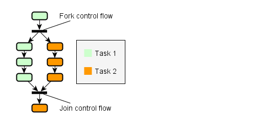
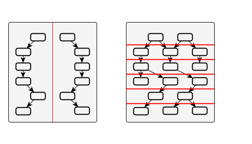
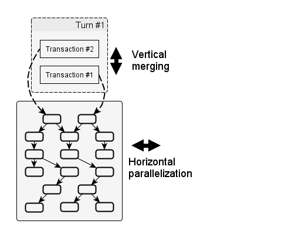
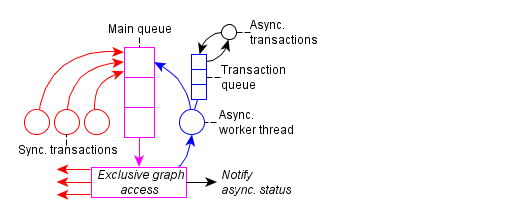

Concurrency model
Goals
The goal of C++React is to enable implicit parallelism for the previously defined dataflow model.
Implicit parallelism means that code is automatically executed in parallel, if the structure of the computations allows for it.
This is to avoid the complexity that comes with managing parallelism manually, in particular when combined with callbacks.
Another goal is to support concurrent input to the reactive system from multiple threads, both synchronously and asynchronously, in a scalable manner.
Lastly, the common C++ principle of “you don’t pay for what you don’t use” should be adhered to,
so the programmer can decide for which domains parallel updating and concurrenct input should be enabled.
Parallel updating
The Dataflow model guide showed, how interdependent reactive values can be represented as graphs.
It further showed, how inputs are grouped into transactions and processed in turns that propagate changes through the graph.
Based on this dataflow model, we can immediately devise a scheme to parallelize the updating process:
When there are more than two outgoing edges, both paths can be traversed in parallel by different threads.
Coupled with the requirement for update minimality, if a node has multiple predecessors, only the last arriving thread coming from a predecessor may proceed.
In other words, threads are forked and joined analogously to the paths in the graph.
Instead of using threads directly, C++React utilizes TBB’s task interface.
Tasks are units of computation that are automatically mapped to a thread pool.
The following figure shows an example of how node updates could be parallelized:

Propagation is inherently parallelizable and synchronization can be realized efficiently with on atomic counters, though details depend on the implementation.
There exist different concrete algorithms, which can be selected as part of the concurrency policy of a domain.
This includes the option of sequential updating, which disables automatic parallelization.
Trivial node updates
One particular challenge are graphs that consist of mostly trivial operations, because tasks require a certain workload to outweight the induced overhead.
Thus, processing such trivial nodes in a dedicated task is not worth it.
The different propagation strategies account for that with various methods,
for example by dynamically agglomerating several lightweight nodes into a single task, or by selectively enabling parallel updating for heavyweight nodes only.
The problem is especially relevant when using overloaded operators to lift reactive expressions.
An expression like SignalT<int> x = a * 10 + b * 20 - c, with a,b,c being signals as well, could result in 4 nodes - one for each binary operand.
To reduce the overhead, a template-based technique to merge r-value expressions is applied.
At the cost of a small overhead at creation time, the presented expression only results in a single node.
Nonetheless, parallelizing trivial updates remains challenging as the overall implementation becomes more optimized.
That is, because by removing overhead, the workload per task is reduced as well.
Limitations
The kind of implicit parallelism that has been presented is inherently tied to the underlying dataflow model.
Furthermore, the dataflow model is declarative, based on acyclic graphs, and push-based.
This means that C++React is not suited to create parallel algorithms, unless they fit those constraints.
A common example to demonstrate parallelization primitives is the calculation of Fibonacci numbers, which are defined as Fib(0) = 1, Fib(1) = 1, Fib(n) = Fib(n-1) + Fib(n-2).
We could generate a graph that represents the unfolded recursive structure of a specific Fibonacci number, but that would certainly not be an effective way to go about it;
graph creation is also not parallel.
If, on the other hand, we have some data x, and we want to run several calculations on it, among them being Fib(x), then we can automatically parallelize that.
While parallelization of updates in the same turn comes naturally, there is rather substantial downside:
All reactive values of a domain are eventually “connected”; even if seemingly unrelated input nodes are changed, their propagation paths might cross at some point.
In worst case, this means that each domain can only process a single transaction at a time.
There are multiple ways to address this; the first is to drop update minimality and glitch freedom.
Coordinated updating becomes synchronized updating/flooding.
Another approach would be to divide the graph into disjoint regions, either based on static topology, or by having turns acquire locks on the nodes they might update beforehand.
The following image visualizes this:

The problem, however, are dynamic nodes. The nature of dynamic nodes is that they change the topology as part of being updated; we do not know in which way until after the update.
Thus, in the presence of dynamic node, regions may shift dynamically.
This can lead to scenarios where several turns have already started and cannot continue, unless they start rolling back already committed updates.
Such a rollback of updates would not be impossible, but for this library it was considered too expensive.
Since giving up update minimality and glitch freedom was not desirable either, we use a different approach.
Transaction merging
So far, we defined two dimensions relevant for utilization of parallel hardware:
- horizontal: running updates of the same turn in parallel;
- vertical: running multiple turns concurrently.
Supporting the latter is difficult, but we can indirectly enable it by merging multiple transactions into a single turn.
Here’s how that works:
- Normally, transactions are processed in a dedicated turn.
- Each turn has exclusive access to the whole graph.
- If a transaction arrives while another turn is active, the transaction is queued.
- Successive transactions in the queue that are mergeable will be merged. Their inputs are applied in FIFO order.
- Merged transactions are processed in a single turn.
Each turn still has exclusive access to the whole graph, but the workload per turn is increased.
Instead of adding another dimension, we attempt to extend the existing one.
The following figure depicts this graphically:

The intended effects are:
- More changed input nodes per turn ⇒ more nodes of the graph are reached ⇒ more opportunity for horizontal parallelization.
- More workload per node ⇒ move effective processing and parallelization as overhead becomes less significant.
- Less turns ⇒ less overhead.
The benefits w.r.t. reduced overhead do always apply, but to gain increased horizontal parallelization, the graph topology must allow for it.
To put this into perspective with some numbers, for a single event source with an observer, processing one million events takes 0.552s.
With merging enabled, the time is halved to 0.275s.
There is one noteworthy caveat: If the value of a signal is changed multiple times during a transaction, only the final value is propagated as a change.
The reasoning behind this is that unlike for event streams, where every single event should be registered,
for signals we only care about the most recent value.
If a value is already known to be outdated, there is no need to process it.
This rule is extended to merged transactions, which only apply the most recent value for each changed input signal.
There might also be cases where certain invariants exist between inputs of the same transaction, which would be violated if transactions are merged.
For these reasons, transaction merging is not enabled by default, but has to be allowed explicitly.
Asynchronous transactions
The queueing scheme is detailed in this figure:

There is a main queue, used to synchronize exclusive access to the graph. Each entry in this queue represents a thread.
While synchronous transactions run in dedicated threads, there also exists a mechanism for asynchronous transactions.
They are useful, if the initiating thread should not be blocked, or for batch processing of multiple transactions.
Asynchronous transactions are stored in a high-performance thread-safe queue and executed sequentially by a dedicated worker thread.
To synchronize this worker thread with synchronous transactions, it uses the main queue to gain access to the graph.
Transaction merging happens transparently between synchronous and asynchronous transactions.
Conclusions
By using reactive types like signals, events and observers, we automatically get the option of running updates in parallel without having to change our code.
This does not target the fine-grained algorithmic level, but rather enables implicit parallelism for the composition of algorithms.
While hand-crafted parallel algorithms might be preferable in some cases anyway, as they can benefit from an intelligent approach,
managing the complexity of inter-dependent parallel pieces is purely mechanical and exactly the kind of task that should be automated.
Concurrent input is supported as well, including asynchronous transactions.
We presented transaction merging as a method to improve scalability for highly contented inputs, without giving up glitch freedom and keeping the implementation lightweight and predictable.
 Hold
Hold WeightHint
WeightHint Continuation
Continuation REACTIVE_DOMAIN
REACTIVE_DOMAIN